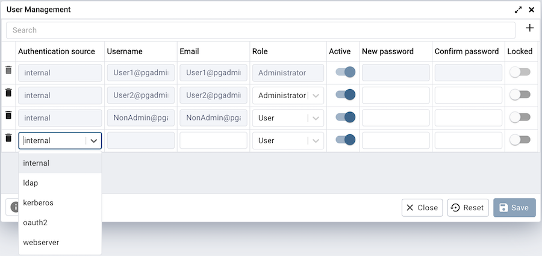

User Management Dialog¶
When invoking pgAdmin in desktop mode, a password is randomly generated, and then ignored. If you install pgAdmin in server mode, you will be prompted for an administrator email and password for the pgAdmin client.
When you authenticate with pgAdmin, the server definitions associated with that login role are made available in the tree control. An administrative user can use the User Management dialog to:
add or delete pgAdmin roles
assign privileges
manage the password associated with a role
Use the Search field to specify a criteria and review a list of users that matches with the specified criteria. You can enter a value that matches the following criteria types: Authentication source, Username, or Email. For example, you can enter ldap in the search box and only the records having ldap as authentication source will be displayed in the User Management table.
To add a user, click the Add (+) button at the top right corner.
Provide information about the new pgAdmin role in the row:
Use the drop-down list box next to Authentication source field to select the type of authentication that should be used for the user. If authentication source is only ‘internal’ then Authentication source field is disabled. Supported Authentication source are internal, ldap, kerberos, oauth2 and webserver.
Click in the Username field, and provide a username for the user. This field is enabled only when you select authentication source except internal. If you select internal as authentication source, your email address is displayed in the username field.
Click in the Email field, and provide an email address for the user.
Use the drop-down list box next to Role to select whether a user is an Administrator or a User.
Select Administrator if the user will have administrative privileges within the pgAdmin client.
Select User to create a non-administrative user account.
Move the Active switch to the No position if the account is not currently active; the default is Yes. Use this switch to disable account activity without deleting an account.
Use the New password field to provide the password associated with the user specified in the Email field. This field is disabled if you select any authentication source except internal.
Re-enter the password in the Confirm password field. This field is disabled if you select ldap as authentication source.
Locked switch is disabled by default when set to False. It is only enabled when the user is locked by trying unsuccessful login attempts. Move the switch to the False position if you want to unlock the account.
To discard a user, and revoke access to pgAdmin, click the trash icon to the left of the row and confirm deletion in the Delete user? dialog. If the user has created some shared servers, then the Change Ownership dialog will appear to change the ownership of a shared server.
Users with the Administrator role are able to add, edit and remove pgAdmin users, but otherwise have the same capabilities as those with the User role.
Click the Help button (?) to access online help.
Click the Close button to save work. You will be prompted to return to the dialog if your selections cannot be saved.